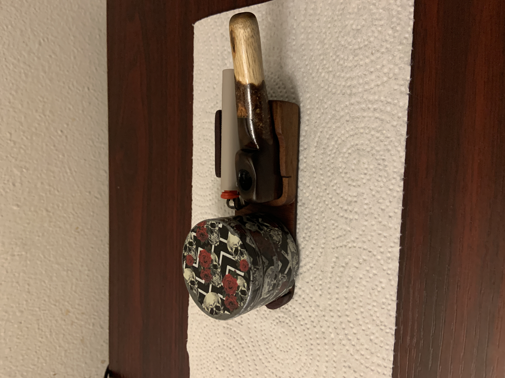

A Handmade Work of Art: My Mango Wood and Black Walnut Smoking Pipe
There’s something deeply satisfying about crafting something with your own hands — especially when it’s made from materials that carry a personal story. Recently, I finished a project that’s been on my mind for a while: a custom smoking pipe made from two beautiful woods — mango tree branch and black walnut.
From the Backyard to the Workbench
The stem of the pipe has a special origin. It comes from a branch of the mango tree that grows right outside my house. I’ve watched that tree flourish for years, and when one of its branches needed trimming, I saw the perfect opportunity to turn it into something meaningful rather than letting it go to waste. Mango wood isn’t typically used for pipe stems, but its light tone, smooth grain, and subtle aroma give the piece a natural warmth that I love.
The Rich Character of Black Walnut
For the bowl — the heart of the pipe — I chose black walnut. It’s a wood known for its deep, rich color and fine texture. Carving it revealed intricate swirls of brown and gold that contrast beautifully against the lighter mango stem. The black walnut adds a grounded, elegant touch and holds up well under heat, making it both functional and beautiful.
The Crafting Process

Shaping and sanding the mango branch was both meditative and rewarding. I kept the natural curvature of the wood, allowing its form to guide the final design. The connection between the stem and bowl was the most delicate part — aligning them perfectly took patience, but seeing them fit together so naturally was worth every minute.
After several rounds of fine sanding and a natural oil finish, the result is a smooth, organic texture that feels good in the hand and looks even better in the light.
More Than a Pipe
This piece isn’t just a smoking pipe — it’s a blend of memory, craftsmanship, and connection to nature. Every time I look at it, I’m reminded of the mango tree that shades my yard and the quiet hours spent bringing the idea to life.
Whether or not it ever gets used for its traditional purpose, it stands as a piece of functional art — something that connects me to my surroundings and to the timeless craft of shaping wood into something meaningful.
Materials & Tools
- Materials:
- Black walnut (bowl)
- Mango tree branch (stem)
- Cherry wood (stand)
- Purple heart (stand)
- Tools & Techniques:
- Scroll saw
- Bench drill press
- Sanding
- Hand assembly and finishing